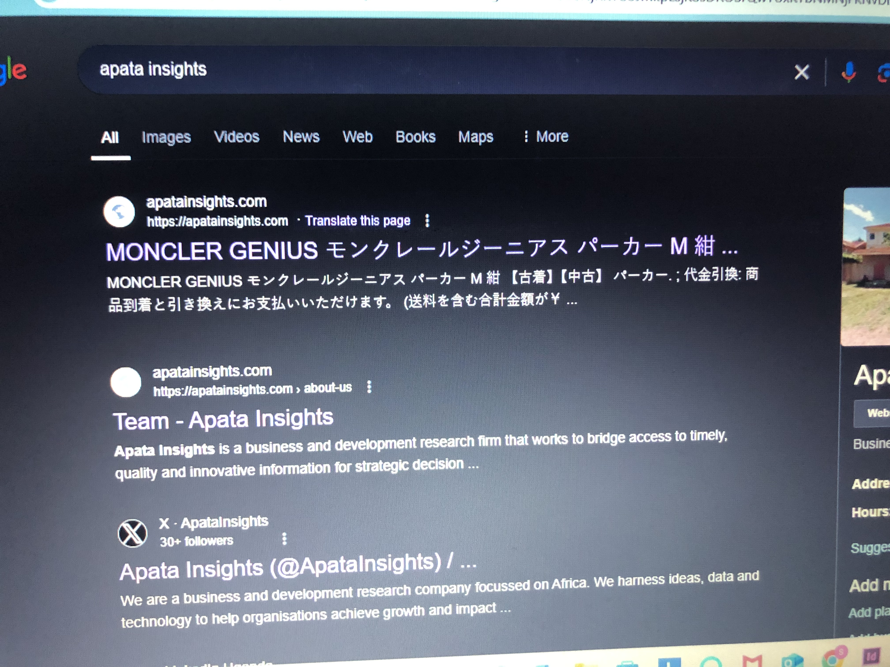
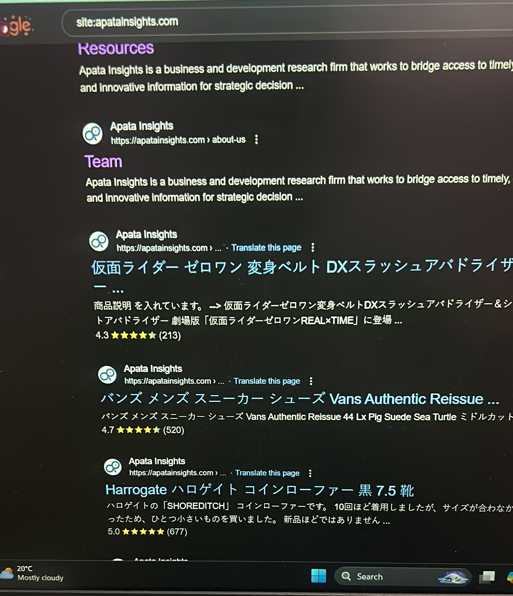
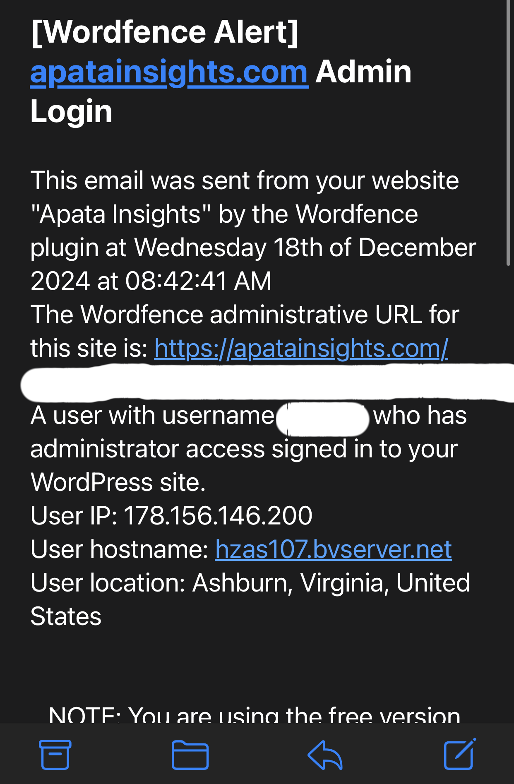
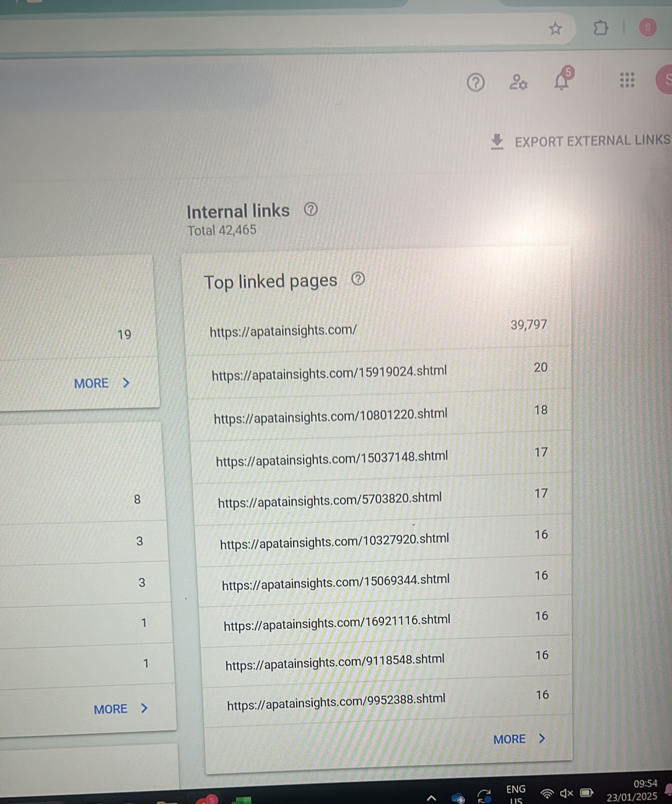
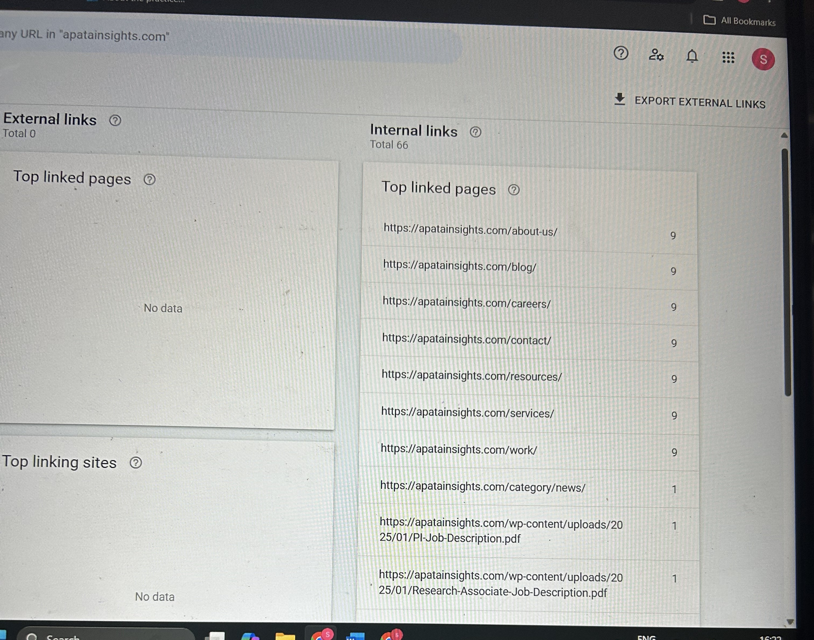

Japanese Keyword Hack (Dec 2024 – June 2025)
At the end of December 2024, our website was hacked through an outdated Astra theme. The visible pages of the website started showing Japanese words as page names. When I updated the theme, the website looked normal again, but I suspected the issue was not fully resolved.
After checking Google Search Console, I discovered that thousands of spam pages had already been indexed. These pages were leading to different shopping websites. The links were cloaked and could only be seen when accessed in incognito mode. This meant the website was still compromised even though it looked clean on the surface.


I started by backing up the website and changing all credentials. I checked the root files and deleted suspicious files, but the hacker was able to regain access. I restored a previous clean backup, yet the reinfection continued. I then found obfuscated PHP code inserted at the top of my index.php file. I replaced the file, but the hack persisted, which suggested that the visible code was likely a distraction from a deeper backdoor.

I stopped all plugins except Elementor, removed unnecessary themes except Astra, and installed another SEO plugin to manage indexing. I ran checksums to identify mismatched core files and replaced any that did not match, including index.php. I ran scans using Sucuri and Wordfence, but neither detected malware.
While reviewing backup files, I discovered suspicious files I had never created, including files ending with “.tmb”. I isolated that folder from the main directory. I then installed Wordfence to monitor downtime, file changes, and unauthorized logins. Eventually, I identified a malicious PHP file that was changing permissions of .htaccess and index.php to read-only, generating dynamic spam links, containing a backdoor, and using a self-deleting script. The script could be triggered by appending parameters to the website URL. This was the main persistence mechanism that allowed the hacker to regain access.
After identifying the malicious PHP file, I completely removed it from the server. I disabled file editing in WordPress to prevent direct theme and plugin modification. I cleaned the directory and replaced compromised files with verified versions. I disallowed file changes through configuration controls and strengthened access rules.
I then added Cloudflare in front of the website to provide firewall protection and filter malicious traffic. Over time, this helped block suspicious requests.
To prevent future incidents, I separated the admin account from the editor account, enabled two-factor authentication, limited access permissions, and changed all passwords associated with the website within the organization. I also deleted unnecessary themes and plugins to reduce the attack surface.
After several months of monitoring and hardening, the reinfection stopped completely. The spam pages were gradually removed from search engine indexing, and the website returned to normal operation. Comparing my January 2025 and current Google Search Console screenshots shows the reduction from thousands of indexed spam pages to a clean index status.
Since implementing these security measures, the website has remained stable with no further unauthorized access. The incident resulted in a significantly improved security posture, better access control, and stronger monitoring practices.


Since implementing these measures, the website has remained stable with no further unauthorized access, resulting in improved security posture and stronger monitoring practices.
← Back to Portfolio